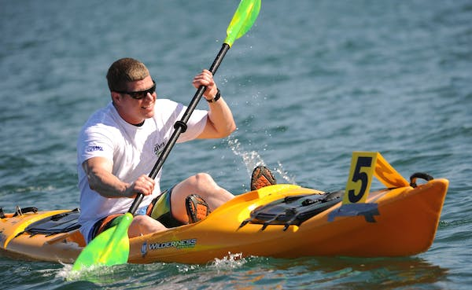
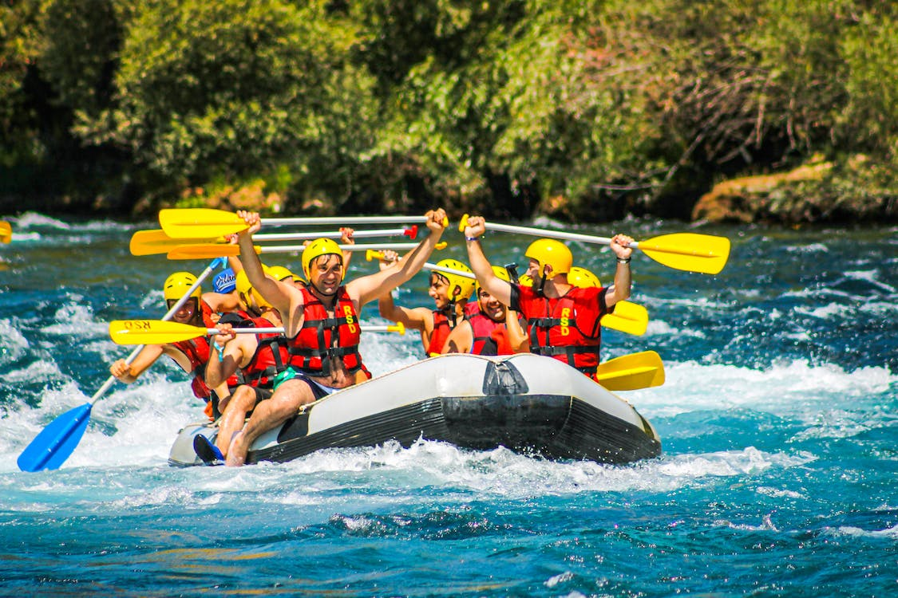
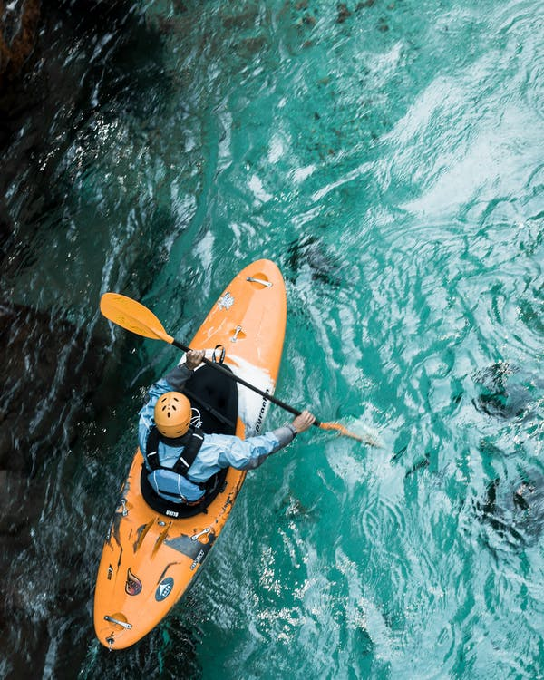
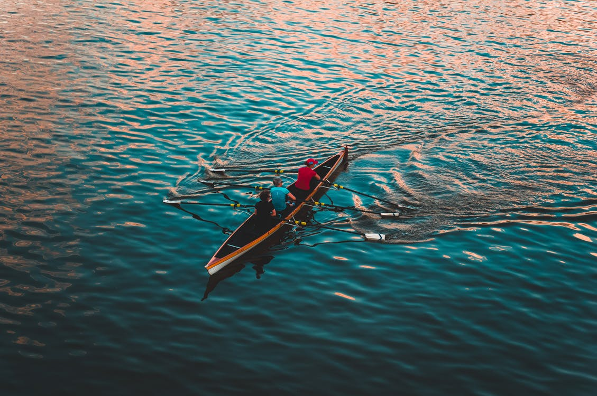
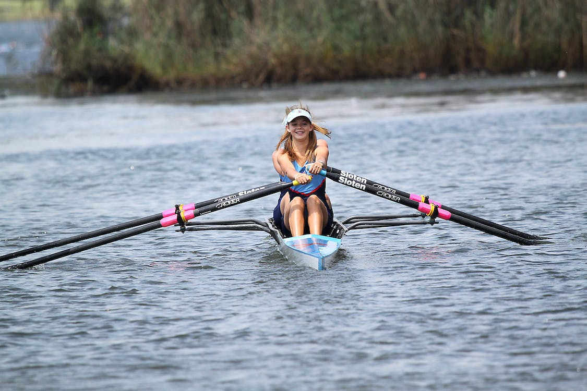
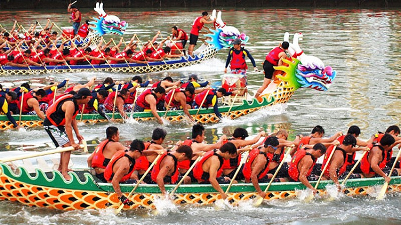
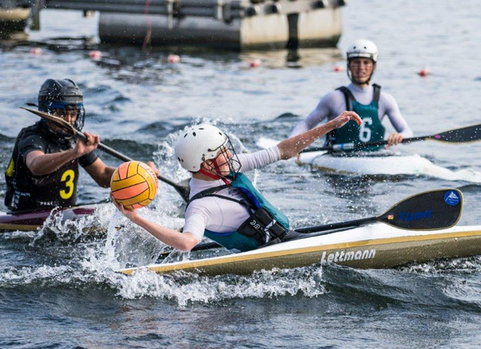

Canoeing is an activity which involves paddling a canoe with a single-bladed paddle. Common meanings of the term are limited to when the caneoing is the central purpose of the activity. Broader meanings include when it is combined with other activities such as canoe camping, or where canoeing is merely a transportation method used to accomplish other activities. Most present-day canoeing is done as or as a part of a sport or releational activity. In some parts of Europe canoeing refers to both canoeing and kayaking, with a canoe being called an open canoe.
We have something for everyone when it comes to water sports. Whether you’re a beginner or an experienced kayaker, rower, slalom-er, dragon boater, or canoeist, we’ve got you covered. We offer world-class instruction in all the following disciplines:
Kayaking is a great way to stay active and have fun. Our beginners’ classes are perfect for those who want to learn the basics of paddling and navigation. Our more advanced classes will teach you how to train for competitions and perform advanced maneuvers in difficult conditions, including rapids and whitewater.

Canoeing is a great way to explore the outdoors and stay fit. Here we teach you flat water canoeing, white water canoeing, and marathon canoeing. You’ll also learn about safety procedures and how to handle your canoe in difficult conditions. Our advanced classes are perfect for those looking to compete in canoeing competitions.

Rowing is a great way to stay fit and improve your cardiovascular health. Our classes are perfect for beginners of all ages and experience levels. In our advanced classes, you’ll learn how to row in a team, compete in regattas, and handle your boat in difficult conditions. rowing is very great way to stay fit and improve your health.

Dragon Boating is a team sport that is enjoyed by people of all ages. In our classes, you’ll learn the basics of this exciting discipline, including how to paddle as a team, navigate your boat, perform synchronized moves and do the dragon dance. You’ll also learn about safety procedures and how to handle your boat in difficult conditions. Our expert instructors will help you reach your full potential and compete at the national and international level.

Polo is a fast-paced and exciting water sport that can be enjoyed by people of all ages. In our classes, you’ll learn the basics of canoe polo, including how to paddle as a team, navigate your boat, and score goals. Our expert instructors will help you reach your full potential and compete at the national and international level.

Canoeing and kayaking are low impact activities that can improve your aerobic fitness, strength and flexibility. Specific health benefits include:
Canoe – is an open vessel and the person either sits or kneels inside the canoe and uses a single-bladed paddle to push the craft through the water.
Kayak– this is an enclosed vessel and the person sits inside the kayak with legs extended and uses a double-bladed paddle.

1. Sea kayaking – this is paddling in the sea. Sea kayaking is becoming a popular water sport in Australia.
2. Sea kayaking – this is paddling in the sea. Sea kayaking is becoming a popular water sport in Australia.
3. Sailing – the canoe or kayak is fitted with a sail.
4. Surf kayaking – the kayak is typically fitted with a fin, rather like a surfboard.
5. Sprint racing –this is a sprint race across calm water.
6. Ocean racing – this is a race in white water (ocean). This discipline requires extreme skill and fitness.
7. Marathon racing – this is a lengthy race, for example, down a long river such as the Murray.
8. Slalom –the person must, against the clock, negotiate a white water course. This includes steering around obstacles (typically, poles suspended over the course).
9. Canoe polo – two teams of five players each must compete to score the most goals using a water polo ball.